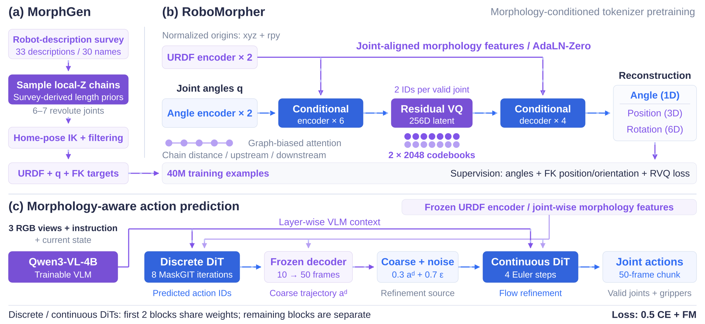

RoboMorpher
Scaling Robot Morphology Representations
for Cross-Embodiment Action Prediction
- 1

- 2
- 3
- 4
- 5
- 6
Actions need to
understand the body.
The same joint configuration can produce different link poses on different robots. RoboMorpher connects control coordinates to their spatial effects through a morphology-conditioned action tokenizer.
Kinematic pretraining learns codes that reconstruct joint angles and link poses. A VLA policy predicts these codes and refines continuous trajectories.
morphology–state pairs
joints per generated arm
shared RVQ codebooks
frames per action chunk
MorphGen
Procedural arms and kinematic supervision.
RoboMorpher
Morphology-conditioned, joint-aligned action codes.
Morphology-aware VLA
Discrete prediction and continuous refinement.
Geometry becomes supervision.
Position-specific link-length priors guide sampling. Collision-aware inverse kinematics filters home poses, and forward kinematics supplies joint-aligned pose targets.
Link-length priors

Joint distribution
Generated Morphologies
Method

Embodibench
Single- and dual-arm (same-side / opposite-side) manipulation in SAPIEN.
Results
Best mean success among joint-space methods.
1,500 trials / method / benchmarkRoboTwin 2.0
56.40%
+9.73 ppvs. StarVLA (joint)
EmbodiBench
23.27%
+15.34 ppvs. StarVLA (joint)
Success rate (%) ↑
| Method | RoboTwin 2.0 | EmbodiBench |
|---|---|---|
| End-effector reference | ||
| StarVLA (EE) | 69.93 | 32.00 |
| Joint-space control | ||
| Angle+M | 51.87 | 5.33 |
| 256-bin | 51.60 | 5.53 |
| FAST | 50.73 | 5.93 |
| StarVLA (joint) | 46.67 | 7.93 |
| Angle | 45.33 | 4.60 |
| VLA + RoboMorpher | 56.40 | 23.27 |
See the full results in the paper.
RoboTwin 2.0 Results
Success rate (%) ↑
| Method | Grab roller | Shake bottle | Handover mic | Place burger fries | Place empty cup | Click bell | Lift pot | Open laptop | Beat block hammer | Stack bowls three | Pick dual bottles | Move can pot | Place phone stand | Put bottles dustbin | Place dual shoes | Mean |
|---|---|---|---|---|---|---|---|---|---|---|---|---|---|---|---|---|
| End-effector reference | ||||||||||||||||
| StarVLA (EE) | 100.00 | 100.00 | 93.00 | 52.00 | 85.00 | 88.00 | 82.00 | 97.00 | 32.00 | 68.00 | 65.00 | 52.00 | 51.00 | 42.00 | 42.00 | 69.93 |
| Joint-space control | ||||||||||||||||
| Angle+M | 97.00 | 96.00 | 74.00 | 53.00 | 69.00 | 100.00 | 22.00 | 70.00 | 18.00 | 64.00 | 30.00 | 12.00 | 39.00 | 18.00 | 16.00 | 51.87 |
| 256-bin | 97.00 | 95.00 | 67.00 | 65.00 | 70.00 | 72.00 | 37.00 | 73.00 | 13.00 | 59.00 | 35.00 | 21.00 | 34.00 | 10.00 | 26.00 | 51.60 |
| FAST | 95.00 | 96.00 | 74.00 | 67.00 | 68.00 | 69.00 | 17.00 | 76.00 | 25.00 | 54.00 | 32.00 | 17.00 | 42.00 | 12.00 | 17.00 | 50.73 |
| StarVLA (joint) | 90.00 | 92.00 | 47.00 | 59.00 | 69.00 | 88.00 | 28.00 | 66.00 | 10.00 | 25.00 | 32.00 | 20.00 | 31.00 | 21.00 | 22.00 | 46.67 |
| Angle | 95.00 | 88.00 | 52.00 | 58.00 | 69.00 | 84.00 | 5.00 | 64.00 | 11.00 | 54.00 | 25.00 | 20.00 | 27.00 | 8.00 | 20.00 | 45.33 |
| VLA + RoboMorpher | 92.00 | 94.00 | 75.00 | 74.00 | 70.00 | 84.00 | 30.00 | 82.00 | 34.00 | 54.00 | 29.00 | 26.00 | 50.00 | 17.00 | 35.00 | 56.40 |
EmbodiBench Results
Success rate (%) ↑
| Method | Lift | Pick | Push | Stack | Mean | ||||||
|---|---|---|---|---|---|---|---|---|---|---|---|
| End-effector reference | |||||||||||
| StarVLA (EE) | 62.67 | 58.67 | 78.67 | 14.67 | 8.00 | 32.67 | 62.67 | 1.33 | 0.00 | 0.67 | 32.00 |
| Joint-space control | |||||||||||
| Angle+M | 10.67 | 8.67 | 9.33 | 3.33 | 4.67 | 1.33 | 14.67 | 0.00 | 0.67 | 0.00 | 5.33 |
| 256-bin | 14.00 | 4.00 | 11.33 | 2.67 | 4.00 | 4.00 | 15.33 | 0.00 | 0.00 | 0.00 | 5.53 |
| FAST | 9.33 | 11.33 | 10.67 | 4.00 | 2.67 | 5.33 | 15.33 | 0.00 | 0.00 | 0.67 | 5.93 |
| StarVLA (joint) | 14.67 | 14.00 | 13.33 | 6.00 | 6.00 | 9.33 | 16.00 | 0.00 | 0.00 | 0.00 | 7.93 |
| Angle | 10.67 | 6.67 | 6.00 | 1.33 | 2.67 | 5.33 | 13.33 | 0.00 | 0.00 | 0.00 | 4.60 |
| VLA + RoboMorpher | 61.33 | 52.67 | 51.33 | 23.33 | 11.33 | 4.00 | 28.67 | 0.00 | 0.00 | 0.00 | 23.27 |
Cite RoboMorpher
@misc{lin2026robomorpherscalingrobotmorphology,
title = {RoboMorpher: Scaling Robot Morphology Representations for Cross-Embodiment Action Prediction},
author = {Wenwei Lin and Yan Qin and Weiliang Deng and Zixuan Li and Kaixuan Wang and Zanxin Chen and Yue Chen and Tianshuo Yang and Junting Chen and Zhixuan Liang and Yao Mu and Ximin Lyu and Renjing Xu and Ping Luo and Tianxing Chen},
year = {2026},
eprint = {2611.24816},
archivePrefix = {arXiv},
primaryClass = {cs.RO},
url = {https://arxiv.org/abs/2611.24816}
}